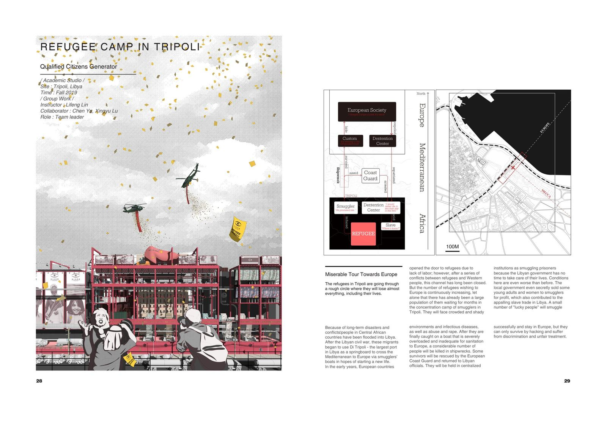
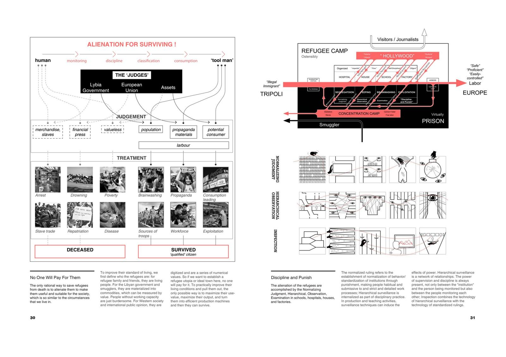
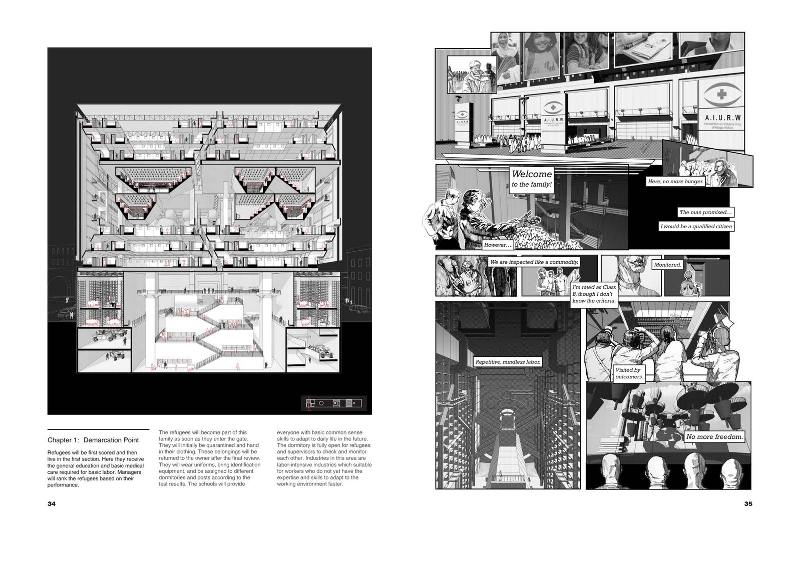
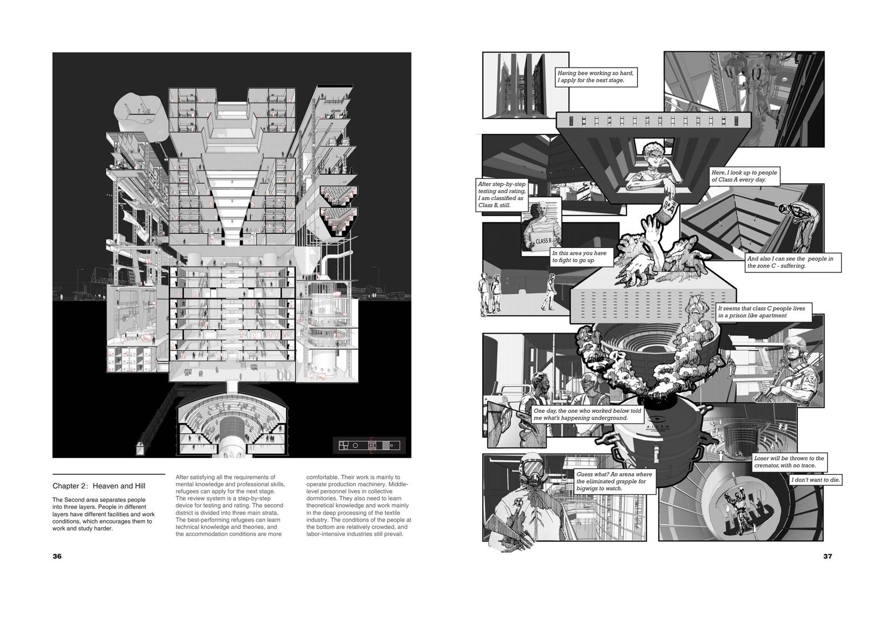
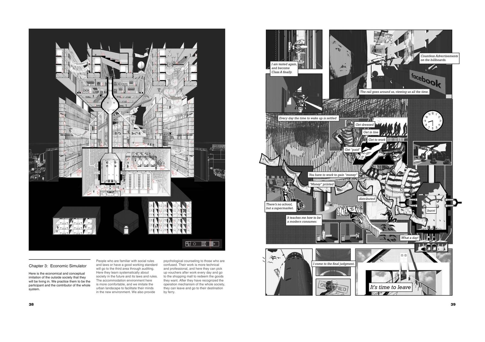
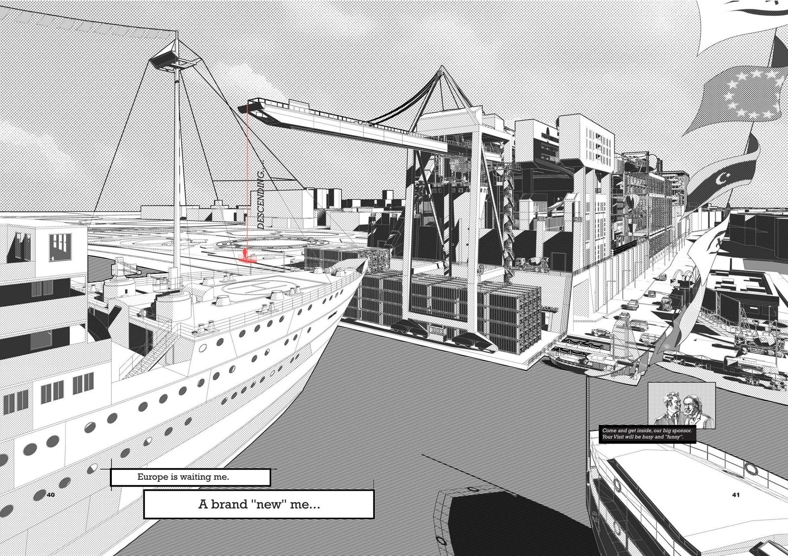

Due to long-term conflicts, people in Central African countries have flooded into Libya, using Tripoli's port as a springboard to cross the Mediterranean to Europe. This project critically examines the systems that process, classify, and commodify refugees — interrogating the mechanisms by which displaced people are judged, rated, and ultimately transformed into "qualified citizens."
The design asks: who defines the refugee? For their families, they are living people. For governments and smugglers, they are materialized into commodities measured by value. For Western society, they are either threats or potential consumers.


The entire building complex consists of three sections corresponding to three distinct discipline systems, each with two to three classes of divisions. Refugees progress through stages of quarantine, education, labor, testing, and consumer acclimatization — a spatial narrative that exposes the dehumanizing machinery of classification and control.




